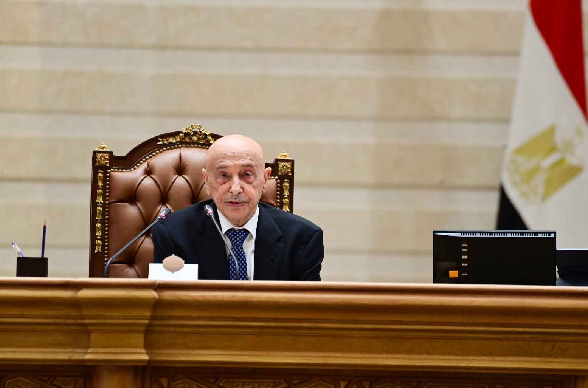
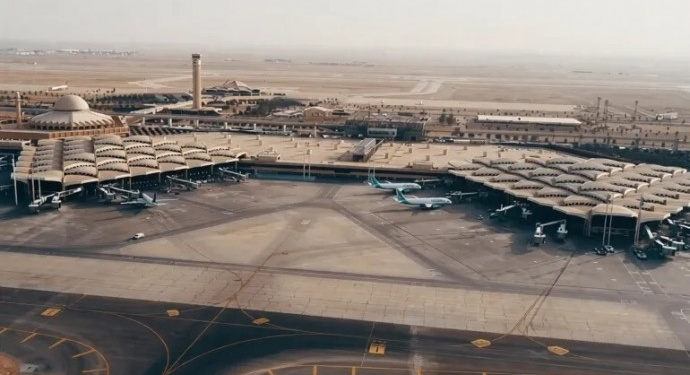
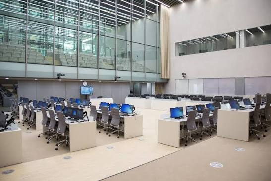
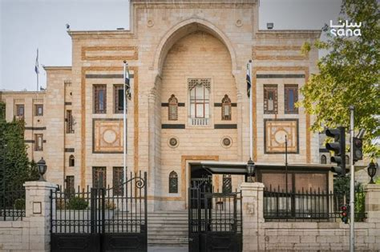

PUBLISHED RESEARCH / PUBLIC INDEX
ODAP Yazılarım
Ortadoğu ve Kuzey Afrika’daki güç değişimleri, uluslararası hukuk, güvenlik ve diplomasi üzerine ODAP’ta yayımlanan analizler.
Dokuz dosya; Türkçe ve İngilizce metinler, yayın görselleri ve özgün kaynakçalarıyla birlikte bu arşivde yer alıyor.

Doğu Libya’da Yeni Dönem: Saleh’in Görevden Alınması Ne Anlama Geliyor?
Libya, Arap Baharı'ndan bu yana demokratik bir yönetim kurma çabası içindedir. Ancak ülke derin bir iç savaşa ve siyasi bölünmüşlüğe sürüklenmiştir. Bu istikrarsızlığın içindeki Libya’da, 6 Ekim 2026 tarihinde Doğu Libya merkezli Temsilciler Meclisi'nde bir meclis başkanlığı seçimi yapıldı ve on iki yıldır görevde bulunan Aguila Saleh, Al-Salhin Abdelnabi al-Obeidi'ye karşı seçimi kaybetti. Zira bu seçimden henüz bir gün önce meclis radikal bir değişiklik yaparak başkanın görev süresini yalnızca on iki ay ile sınırlandıran bir iç tüzük değişikliğine gitti. Bu değişiklik, bazı kişiler tarafından istikrar için atılan bir adım olarak yorumlanmaktadır. Ancak, Libya konjonktürüne bakılırsa, başka bir yorum yapmak mümkündür.

THE POSTPONED EU-GCC SUMMİT: THE DİPLOMATİC COST OF GULF INSECURİTY
The European Union and the Gulf Cooperation Council were scheduled to meet in Riyadh on October 24, 2026. However, it was announced that the Second EU-GCC Summit had been postponed to a later date. The European Council did not provide any details regarding the reason for the postponement. The GCC, however, cited the ongoing Houthi attacks, the suspension of flights at King Khalid International Airport, and concerns over the safety of the participating delegations. In a recent attack on Riyadh’s airport claimed by the Houthis, 13 people were killed and hundreds were injured. This development shows that the security crisis has consequences beyond the military sphere.

FROM BOGOTÁ TO JERUSALEM: COLOMBIA’S SHARP FOREIGN POLICY SHIFT
Colombia officially opened its embassy in Jerusalem on October 14, 2026, as part of its policy to reestablish relations with Israel. The ceremony was attended by Colombian Foreign Minister Omar Bula Escobar and Israeli Foreign Minister Gideon Sa'ar. Colombia became the tenth country to open an embassy in Jerusalem with this move. The Bogota government announced that they are rebuilding their previously severed relations with Israel and that they will continue their strategic partnership with Israel in this context. This step was condemned by 18 countries, including Turkey.

FAS’IN İLK KADIN HÜKÛMET BAŞKANI: TARİHÎ TEMSİL, SINIRLI SİYASAL DEĞİŞİM Mİ?
Fas Temsilciler Meclisi, 22 Ekim 2026 tarihinde Fatima Ezzahra El Mansouri’nin hükûmet programını 204 kabul oyuyla onayladı. Böylece Anayasa’nın 88. Maddesindeki göreve başlama şartını karşılayan bu oylama ile 29 Eylül’de Kral VI. Muhammed tarafından 47. madde uyarınca hükûmeti kurmakla görevlendirilen ve 16 Ekim’de kabinesi atanan El Mansouri’nin anayasal göreve başlama süreci resmileşmiş oldu. Fas tarihinde ilk kez bir kadın, hükûmet başkanlığına geldi ve bu siyasal temsil açısından çok önemli bir gelişmedir. Ancak bu eşiğin ülkenin karar alma mekanizmasında ne ölçüde bir değişim yaratacağı, yeni hükûmetin yapısında ve monarşiyle kuracağı ilişkisinden bağımsız ele alınmaz.

TWO DRAFTS, NO DECİSİON: IS MINURSO BEİNG LEFT WİTHOUT A MANDATE FOR THE FİRST TİME?
The United Nations Security Council, despite debating two competing draft resolutions tabled by the United States and Russia regarding the MINURSO mission in Western Sahara on October 30, 2026, failed to adopt either. The U.S. draft was rejected after receiving 11 votes in favor, three abstentions from China, Pakistan, and Somalia, and one veto from Russia. Russia’s alternative text fell short of the required nine-vote threshold, securing three votes in favor, one vote against from the U.S., and 11 abstentions. As of October 31, 2026, MINURSO was left without a renewed Security Council mandate.

CEZAYİR 53 YIL SONRA NEDEN YURT DIŞINA ASKER GÖNDERİYOR?
Cezayir Parlamentosunun her iki kanadı da üçte iki oy çoğunluğuna ulaşarak 25 Ekim 2026 tarihinde ulusal orduya bağlı birimlerin Nijer’e gönderilmesi kararını onayladı. Üst mecliste oylamaya katılan üyelerin tamamı kararı desteklerken alt meclis, tam oy dağılımını açıklamadan gerekli çoğunluğun sağlandığını bildirdi. Kararın ardından Cezayir Cumhurbaşkanı Abdülmecid Tebbun, konuşlandırma için gerekli talimatları verdiğini açıkladı. Ülke yönetimi, bu kararın bir savaş çıkarma amacı taşımadığını, aksine kararın Nijer makamlarının talebiyle alınmış olup iki ülkenin ortak enerji ve ekonomik çıkarlarını koruma amacı taşıdığını açıkladı. Bu durum, 2023 yılında iktidara geldiğinden beri yeni güvenlik ortakları arayan askeri hükümete sahip Nijer ile iş birliğini de ilerletebilir. Henüz konuşlandırma tarihi ve konuşlandırılacak birim sayısı belirlenmese de Nijer Genelkurmay Başkanı, 19 Ekim’den beri Agadez bölgesinin Bilma departmanındaki Kawar bölgesini ziyaret ediyor; diğer zamanlarda ise yerel askeri komutanlar ve yetkililerle görüşüyor. Karar uygulanırsa Cezayir ordusu, 1973 Arap – İsrail Savaşı’ndan bu yana ilk kez resmi bir görev kapsamında ülke dışında konuşlanacak.

Three Jurisdictions in the Njeem Case: Can Libya Take the Case Away from the ICC?
On November 2, 2026, the Pre-Trial Chamber of the International Criminal Court unanimously confirmed that the Court had jurisdiction over the case against Osama Elmasry Njeem. However, the Chamber deferred its decision on the admissibility of the case. Njeem’s defence argued that the alleged conduct fell outside the scope of United Nations Security Council Resolution 1970 and that relevant domestic proceedings were under way in Libya. The Chamber rejected the jurisdictional challenge but gave the defence and the Libyan authorities until January 29, 2027, to submit additional information. The future of the case will therefore depend on whether the proceedings in Libya constitute a genuine accountability process.

Is Eastern Libya Building a State by Deporting Migrants?
On the 11th November 2026 a total of 602 people were deported from several towns in Eastern Libya, to the border with Chad. This action, taking approximately one and a half days to complete, was carried out by security officials in areas controlled by the Libyan National Army (LNA), led by Khalifa Haftar. The action has been framed as part of an effort to protect the “protect the homeland and its borders”, however, there will be continued house raids targeting properties rented by migrants at the order of Saddam Haftar. There are many unanswered questions around this action. The security officials did not specify the nationalities of those deported, nor did they specify if they had been assessed on their protection needs. Or if they had any recourse to challenge this decision.

SURİYE’DE İDARENİN YARGI DOKUNULMAZLIĞI SONA MI ERİYOR?
Yargı denetimi ilkesi zaten Suriye Anayasası'nda yer alıyordu. Mevcut anayasal bildirgenin 17. Maddesine göre idari kararların yargı denetiminden muaf olamayacağı belirtilmiştir. Ancak Baas rejimi döneminde çıkarılan 1958 tarihli 143 sayılı Kanun, 2012 tarihli 66 sayılı Kararname ve 2018 tarihli 10 sayılı Kanun gibi düzenlemeler, bakanlık ve komisyon kararlarını kesin statüsünde sayarak bu maddenin sağladığı güvenceyi daraltmıştı. Bu tasarı genel hatlarıyla, 1969 tarihli 14 sayılı ve 2008 tarihli 69 sayılı kararnamelerdeki güvenlik ve kamu görevlilerinin kişisel dokunulmazlığını değil, belirli idari işlem ve komisyon kararlarını mahkeme denetiminin dışında tutan hükümlerin kaldırılmasını amaçlıyor. Ancak, reformun önemi hakların ilk kez yazılması değil, önceki yönetimin oluşturduğu kapalı alanların daraltılmasıdır.